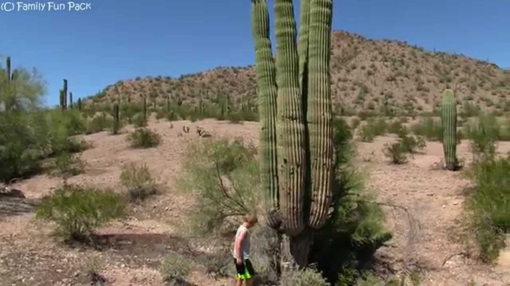

I love nature and am regularly blown away by the beauty, diversity, adaptavity and scale of natural phenomena.
This is a catalogue of some facts about nature I learned recently and find fascinating.
The Saguaro are one of the largest cacti in the world. Found mostly in west US, they can grow up to 40 feet in height, and store up to 2 tonnes of water. They can live up to 200 years of age… and that too in desert.
Also their scientific name Carnegiea gigantea is in honor of Andrew Carnegie, founder of the Carnegie Mellon University where I got my Master’s - though I was deserted there for only 1.5 years.

Midges (a type of flies) swarm together in huge clouds - bugnados - to mate. Sometimes these form over lakes and can be mistaken for fire in the water. BBC says these can sometimes be hundreds of meters tall! I wonder why they stack up over each other like that instead of spreading themselves and using more room…